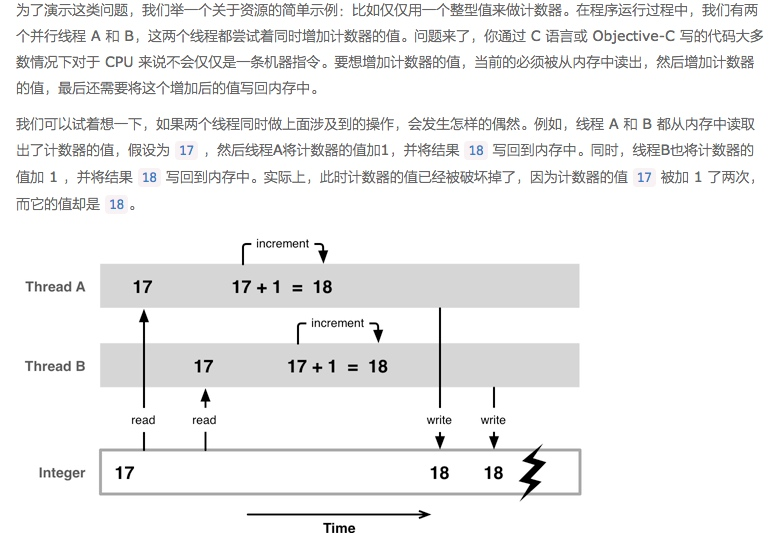
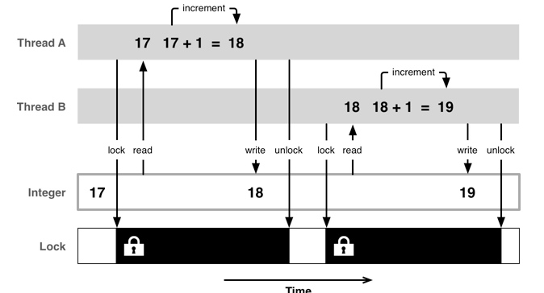
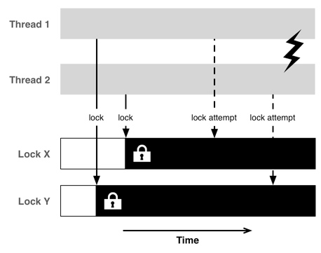
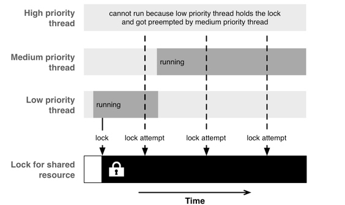

使用并发编程会带来许多陷阱
优先级反转:也就是说低优先级的线程一直阻塞着高优先级的线程
1.资源共享
并发编程中许多问题的根源就是在多线程中访问共享资源。资源可以是一个属性、一个对象，通用的内存、网络设备或者一个文件等等。
这里我们举了一个竞态条件的例子:

这个时候我们需要保证线程B必须等线程A访问完该共享资源才会开始访问共享资源.这时候我们需要一种互斥机制:
2.互斥锁
互斥访问的意思就是同一时刻，只允许一个线程访问某个特定资源
首先需要获得一个共享资源的互斥锁，一旦某个线程对资源完成了操作，就释放掉这个互斥锁，这样别的线程就有机会访问该共享资源

因为现代 CPU 为了优化目的，往往会改变向内存读写数据的顺序（乱序执行）因此还需要解决代码无序执行所带来的问题。如果不能确保 CPU 访问内存的顺序跟编程时的代码指令一样，那么仅仅依靠互斥访问是不够的。为了解决由 CPU 的优化策略引起的副作用，还需要引入内存屏障。通过设置内存屏障，来确保没有无序执行的指令能跨过屏障而执行。
(锁的竞争是这样产生的：当一个或者多个线程尝试获取一个已经被别的线程获取过了的锁)
获取和释放锁所是要带来开销的，因此你需要确保你不会频繁地进入和退出临界区段（比如获取和释放锁）。同时，如果你获取锁之后要执行一大段代码，这将带来锁竞争的风险：其它线程可能必须等待获取资源锁而无法工作。
对于你的代码会如何在多核上运行的预测往往十分重要，你可以使用 Instrument 的 CPU strategy view 来检查是否有效的利用了 CPU 的可用核数，进而得出更好的想法，以此来优化代码。
3.死锁
互斥锁解决了竞态条件的问题，但很不幸同时这也引入了一些其他问题，其中一个就是死锁。当多个线程在相互等待着对方的结束时，就会发生死锁，这时程序可能会被卡住。

你在线程之间共享的资源越多，你使用的锁也就越多，同时程序被死锁的概率也会变大。这也是为什么我们需要尽量减少线程间资源共享，并确保共享的资源尽量简单的原因之一。建议阅读一下底层并发编程 API 中的全部使用异步分发一节。
4.资源饥饿（Starvation）
锁定的共享资源会引起读写问题，大多数情况下，限制资源一次只能有一个线程进行读取访问其实是非常浪费的。因此，在资源上没有写入锁的时候，持有一个读取锁是被允许的。这种情况下，如果一个持有读取锁的线程在等待获取写入锁的时候，其他希望读取资源的线程则因为无法获得这个读取锁而导致资源饥饿的发生。
为了解决这个问题，我们需要使用一个比简单的读/写锁更聪明的方法，例如给定一个 writer preference，或者使用 read-copy-update 算法。Daniel 在底层并发编程 API 中有介绍了如何用 GCD 实现一个多读取单写入的模式，这样就不会被写入资源饥饿的问题困扰了。
5.优先级反转
优先级反转是指程序在运行时低优先级的任务阻塞了高优先级的任务，有效的反转了任务的优先级。由于 GCD 提供了拥有不同优先级的后台队列，甚至包括一个 I/O 队列，所以我们最好了解一下优先级反转的可能性。
高优先级和低优先级的任务之间共享资源时，就可能发生优先级反转。当低优先级的任务获得了共享资源的锁时，该任务应该迅速完成，并释放掉锁，这样高优先级的任务就可以在没有明显延时的情况下继续执行。然而高优先级任务会在低优先级的任务持有锁的期间被阻塞。如果这时候有一个中优先级的任务(该任务不需要那个共享资源)，那么它就有可能会抢占低优先级任务而被执行，因为此时高优先级任务是被阻塞的，所以中优先级任务是目前所有可运行任务中优先级最高的。此时，中优先级任务就会阻塞着低优先级任务，导致低优先级任务不能释放掉锁，这也就会引起高优先级任务一直在等待锁的释放。
解决这个问题的方法，通常就是不要使用不同的优先级。通常最后你都会以让高优先级的代码等待低优先级的代码来解决问题。当你使用 GCD 时，总是使用默认的优先级队列（直接使用，或者作为目标队列）。如果你使用不同的优先级，很可能实际情况会让事情变得更糟糕。

总结:
我们希望通过本文你能够了解到并发编程带来的复杂性和相关问题。并发编程中，无论是看起来多么简单的 API ，它们所能产生的问题会变得非常的难以观测，而且要想调试这类问题往往也都是非常困难的。
但另一方面，并发实际上是一个非常棒的工具。它充分利用了现代多核 CPU 的强大计算能力。在开发中，关键的一点就是尽量让并发模型保持简单，这样可以限制所需要的锁的数量。
我们建议采纳的安全模式是这样的：
从主线程中提取出要使用到的数据，并利用一个操作队列在后台处理相关的数据，最后回到主队列中来发送你在后台队列中得到的结果。使用这种方式，你不需要自己做任何锁操作，这也就大大减少了犯错误的几率。